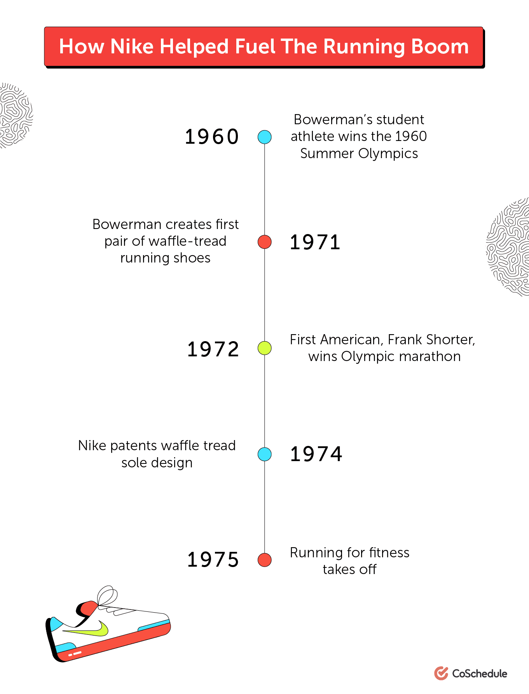
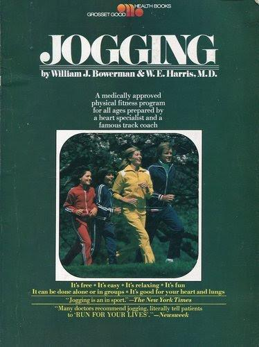
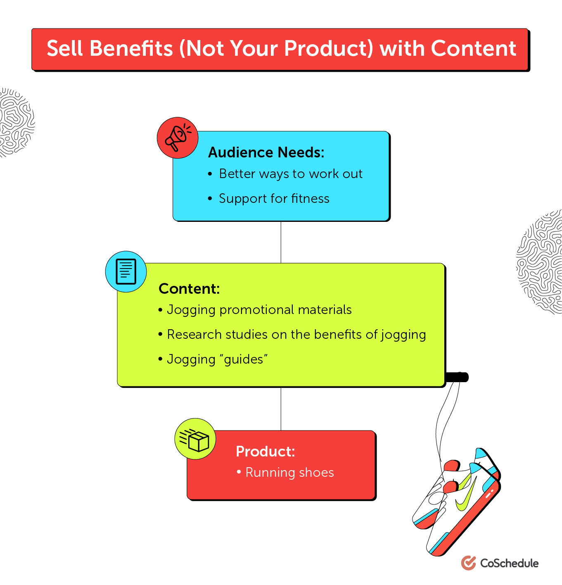

Nike Marketing Strategy: How to Build a Timeless Brand
We all think we know the classic Nike marketing strategy.
"Just do it" comes to mind pretty quickly, as do Air Jordan sneakers, famous athlete endorsements, and the swoosh logo.
But is that really all there is to what Nike is doing? Or, is there something deeper behind their strategy and tactics? The marketing from Nike that most of us recognize isn't the one that made them famous, at least not in the early days. Discovering what first put them on the map is where the gold is. Furthermore, just like any true content marketing strategy, it isn't really much of a "strategy" at all. Like many similar success stories, it was as simple as providing real customer value.
The First Nike Marketing Strategy
Bill Bowerman was a track and field coach, as well as one of the co-founders of Nike. In the mid-1970's, he began experimenting with his wife's waffle maker to design a better tread for running shoes. As the story goes, he ruined the waffle maker but invented a brand new type of shoe. He later used that design to create the first Nike shoe commonly referred to as the "Nike Moon shoe." It was the first step of many that put Nike on the map, but there is more to the story than just a great tread design and a waffle maker. There's also the story of Nike's incredible, if not accidental and seemingly counterintuitive, approach to promoting their product. Bowerman, you see, is also credited as the man who brought about the jogging craze that swept America in the late 1960's and 70's. While you would think that jogging wasn’t something that needed to be invented, it wasn’t all that popular as an exercise or activity at that time. Bill’s work and research truly brought jogging out of obscurity and to the forefront of the minds of the public.

After observing a jogging club in New Zealand, Bill began to understand the value of jogging as a traditional fitness routine. Bill immediately began writing articles and books about jogging and how it could be used as part of a fitness program. His first three-page pamphlet was called the Jogger’s Manual and was later expanded into a 90-page book (see below) that he wrote along with an experienced cardiologist.

Along with Bill's other involvements with professional athletes, his work helped inspire the 1970's running boom that Nike clearly benefited from. Was this the result of a strong marketing strategy Or was it just a coincidence? The answer is probably a mix of both. It would be really great to point to Bowerman's story as a case-in-point example of content marketing at its finest, but it is difficult to do. The book was technically released before the first pair of shoes, and even before he invented the waffle tread. So, if it wasn't true content marketing, what was it and how did it even work?
1. Put Customer Interests First
Customers like great products and they like serious benefits. For them, things that benefit them personally are easy to justify. The Nike Moon shoes did this, but only because the customer was beginning to understand jogging and its benefits for their health. Bill's secret goal wasn't to sell shoes, he was simply promoting something that he believed in. This may not sound like a marketing strategy, but it certainly should.
2. Base Your Strategy On A Felt Need
Initially for Nike's audience, the felt need wasn't for better running shoes, but for a better way to get in shape. Certainly, running was already popular among kids and athletes in the 1970's, but it wasn't the widespread social activity that we see today. The growing white-collar workforce helped pave the way for social activities that included the promotion of cardiovascular health. Once the trend was ingrained, the need shifted and the "jogging shoes" themselves became the felt need.
3. Believe In the Product You Are Selling
It's unlikely that Bowerman's original goal was to become a millionaire as he penned the pages of his first jogging pamphlet. That wasn't why he did what he did. His only goal was to promote a sport and an idea that he believed in. As marketers, shouldn't we believe in the product and the ideas we are selling? For Bowerman, it sure made marketing a lot easier. He was "marketing" without even realizing what he was up to.
4. Sell Easily Identifiable Benefits Instead Of The Product
While jogging is pretty easy to understand, the waffle tread isn't (at least not until you understand why Bowerman made it in the first place). His goal was to make the world's most light–weight running shoe. He believed that this factor alone could dramatically improve the speed of a distance runner. His product worked and quickly gained the industry respect that it deserved.

How Nike’s Marketing Strategy Evolved
As the marketing landscape has changed since the 70s, so has the Nike marketing strategy. In fact, it’s remarkable how well the brand has adapted its approach to new trends and technologies without losing the core of their identity or brand voice. It’s key to understand that while their general aesthetic and tactics have changed with the times, their customer-centric messaging has remained consistent.
1. Embrace New Technologies
While Nike's early marketing strategy centered on print publications, they later went on to dominate other mediums, like television in the 80s and 90s, through modern social media platforms today.
2. Adapt To The Needs Of Your Audience
Nike hasn’t historically adopted new communication platforms for their marketing just because they’re chasing new, flashy objects. Far from it. Rather, they’ve been quick to conquer new mediums because they’re where their customers are. For example, take a look at their Instagram profile. They know their core demographic includes heavy Instagram users and so it makes sense for their brand to maintain a presence there. However, they also make sure that everything they post provides value. Rather than interrupting the flow of their follower’s feeds with flagrant sales pitches, they share motivational messaging.
Other posts subtly tie into the brand’s history and their sponsored influencers while directing users to interest–specific Nike sub-accounts on Instagram. In this case, they could have simply said something to the effect of, “Check out our women’s footwear and apparel profile, and our general running product profile." Instead, they went the extra mile and created something memorable and entertaining while staying relevant to what their audience wants to see.
3. Stay True To Your Sense Of Purpose
They say the more things change, the more they stay the same. For Nike, that has certainly remained true. Throughout their current content marketing initiatives, Nike makes sure their brand message hasn’t gotten lost over time or across channels. They focus their emphasis on creating content that promotes the benefits of their products, rather than the features. Helping their customers be better at what they love to do is still the focus of their branding and message. By moving their content marketing to the platforms where their customers are, it shows that they are keeping their audience’s needs in mind while staying true to themselves. Nike's marketing strategy has succeeded in sustaining a global brand while many of their competitors have come and gone from the spotlight.